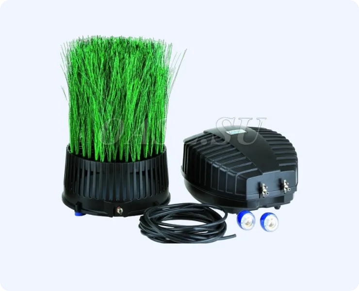

Аэраторы для пруда
Комплект с аэратором OXYTEX CWS SET 1000, 1000 л/ч, 0.4Бар
Цена и наличие
- 1 шт.1 480 BYN / шт.В наличии
Данные на 23.11.2026.
Характеристики
- Бренд
- Oase
- Тип аэратора
- мембранный, комплект
- Поверхность биофильтрации
- 3,5 м²
- Макс. рабочее давление
- 0,4 Бар
- Производительность
- 1000 л/час
- Размеры (∅ х В) мм
- 220 х 300
- Номинальное напряжение
- 12В /перем. ток
- Энергопотребление Вт
- 15
- Длина кабеля 12В (м)
- 2.0 (блок питания) + 3.0
- Вес кг
- 5,59
- Поверхность биофильтрации (м²)
- 3,5
- Макс. рабочее давление (бар)
- 0,4
- Макс. производительность
- 1000 л/час
- Шланг (кол-во/длина/ диаметр)
- 1шт/5м/4.5мм
- Увеличение эффективности фильтра
- до 25%
- Страна производитель
- Германия
Описание
OXYTEX CWS SET 1000 - комплект для пруда.
КОМПЛЕКТ АЭРАТОР БЕРЕГОВОЙ OXYTEX CWS SET 1000 В комплект входит: распылитель в виде травы, шланги для подключения к аэратору, аэратор Размеры (∅ х В) мм.220 х 300 Номинальное напряжение12В /перем. ток Энергопотребление Вт. 15 Длина кабеля 12В (м)2.0 (блок питания) + 3.0 Вес кг.5,59 Поверхность биофильтрации (м²)3,5 Макс. рабочее давление (бар) 0,4 Макс. производительность насоса (л/ч) 400 Шланг (кол-во/длина/ диаметр) 1шт/5м/4.5мм Увеличение эффективности фильтра до 25% Уникальное сочетание насыщения кислородом, циркуляции воды и переработки питательных веществ Идеальное дополнение к системам фильтрации, эффективность которых может быть увеличена на 25% Привлекательное оформление в виде растения Полный комплект готовый к подключению